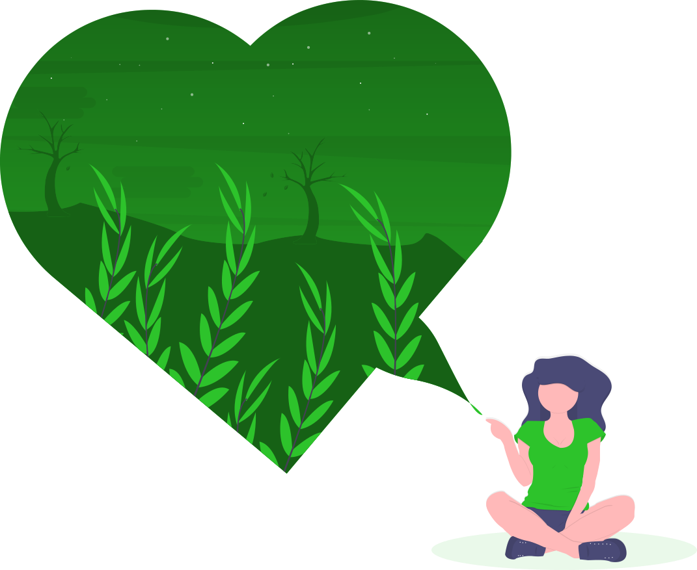
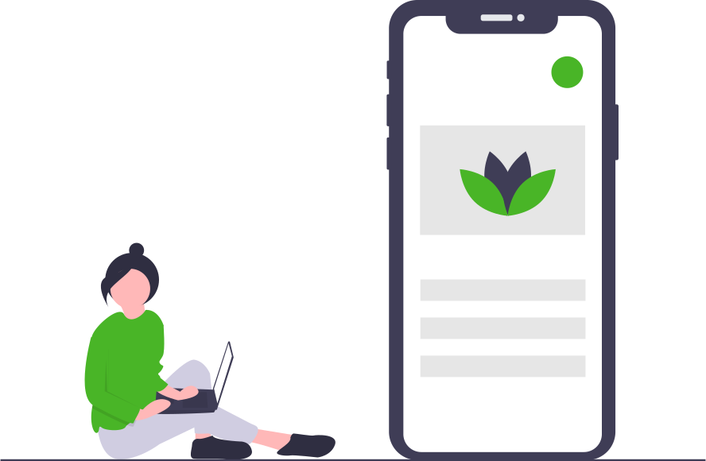
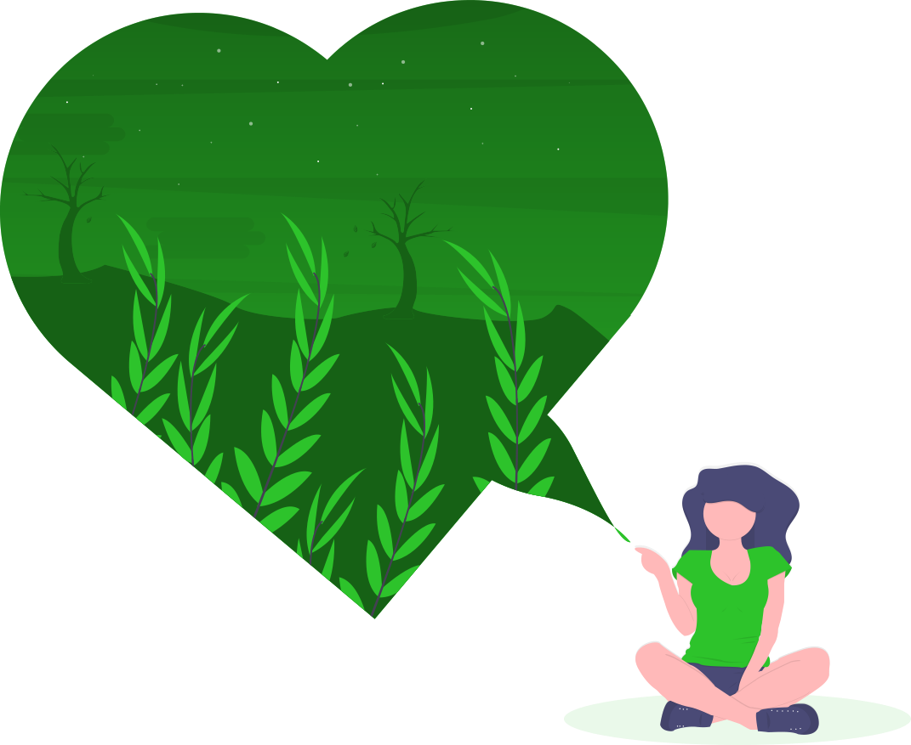
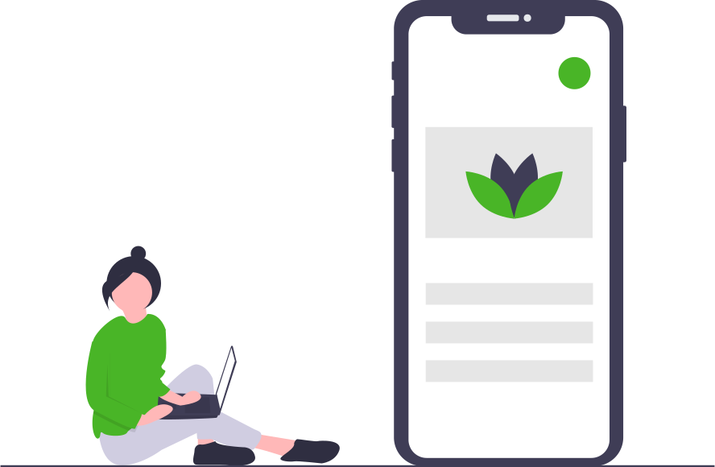

Help shape the future of cannabis and women’s health by joining the Healthy Femme study!
Sign up now to qualify and you will receive cannabis products discounted or even free of charge and direct br from the Licensed Producer,
Join the thousands of other women in our Healthy
Femme
Cannabis Study!
 


